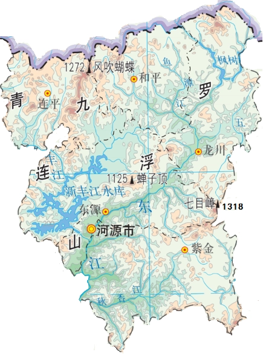

位置境域
河源市位于广东省东北部，地处东江中上游，东靠梅州市，南接惠州市，西连韶关市，北邻江西省赣州市。其范围是东经114°14′至115°36′，北纬23°10′至24°47′，河源市中心城区与广州、深圳及香港的直线距离均在200公里以内，是粤东西北唯一同时近距离接受三个国际都市辐射带动的地级市
。全市面积1.5642万平方千米。
地形地貌

河源市处于粤东北山区与珠江三角洲平原地区的结合部，属山地丘陵地区。境内地势东北向西南倾斜，粤赣边境山高岭峻，最高峰连平县黄牛石顶，海拔1430米。山脉多北东走向，主要山脉有北西部九连山脉，斜贯中部的罗浮山脉及南东边缘的莲花山脉。东江、新丰江纵贯全境，山岭与盆地相间，在山间和东江边分布着冲积小平原和宽广的谷地。在地貌分区上，河源市地貌主要属粤东褶断侵蚀剥蚀平行岭谷低山丘陵区，进一步可划出4个北东向平行排布的带状亚区。北西部连平则属粤北褶断侵蚀溶蚀中低山区。
气候
河源市属亚热带季风气候，气温偏高，年平均气温21.0℃，比常年偏高0.5℃，全年气温变化异常，高温日数多；年平均降水量1742.0毫米,比常年略偏多，降水时空分布不均；日照时数偏少，年平均日照总时数1733.9小时，比常年偏少1成，时空分布不均。
水文
河源市水系分为东江、北江、韩江三大流域，东江流域面积13737平方千米，约占全市面积的87.3%；北江流域面积326平方千米，约占全市面积2.1%；韩江流域面积1670平方千米，约占全市面积10.6%。全市有近百条河流。
市境内第一大河流为东江，发源于江西省寻乌县桠髻钵山和安远县三百山，上游称寻乌水，流入广东在龙川五合圩与安远水汇合后始称东江，全长562千米，流经市境内龙川、和平、东源、源城和紫金等县区，境内河段长193.6千米。
第二大河是新丰江，发源于新丰县小镇崖婆石，流经新丰县小镇、梅坑、丰城、大席等乡镇向南流经西坑，与连平忠信河汇合流入东源县境内半江，纳船塘河、骆湖河、灯塔河，再集治溪、立溪、古岭、南湖诸水，穿过河源市区而汇入东江，也是东江第一大支流。此外，较大的河流还有秋香江、浰江
。